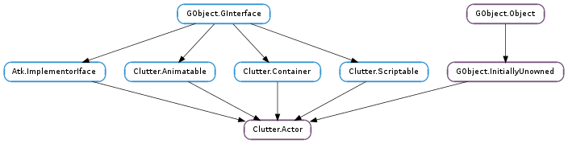

| Name | Type | Flags | Description |
|---|---|---|---|
| actions | Clutter.Action | w | Adds an action to the actor |
| allocation | Clutter.ActorBox | r | The actor’s allocation |
| anchor-gravity | Clutter.Gravity | r/w | The anchor point as a Clutter.Gravity |
| anchor-x | float | r/w | X coordinate of the anchor point |
| anchor-y | float | r/w | Y coordinate of the anchor point |
| background-color | Clutter.Color | r/w | The actor’s background color |
| background-color-set | bool | r | Whether the background color is set |
| child-transform-set | bool | r | Whether the child-transform property is set |
| clip | Clutter.Geometry | r/w | The clip region for the actor |
| clip-rect | Clutter.Rect | r/w | The visible region of the actor |
| clip-to-allocation | bool | r/w | Sets the clip region to track the actor’s allocation |
| constraints | Clutter.Constraint | w | Adds a constraint to the actor |
| content | Clutter.Content | r/w | Delegate object for painting the actor’s content |
| content-box | Clutter.ActorBox | r | The bounding box of the actor’s content |
| content-gravity | Clutter.ContentGravity | r/w | Alignment of the actor’s content |
| content-repeat | Clutter.ContentRepeat | r/w | The repeat policy for the actor’s content |
| depth | float | r/w | Position on the Z axis |
| effect | Clutter.Effect | w | Add an effect to be applied on the actor |
| first-child | Clutter.Actor | r | The actor’s first child |
| fixed-position-set | bool | r/w | Whether to use fixed positioning for the actor |
| fixed-x | float | r/w | Forced X position of the actor |
| fixed-y | float | r/w | Forced Y position of the actor |
| has-clip | bool | r | Whether the actor has a clip set |
| has-pointer | bool | r | Whether the actor contains the pointer of an input device |
| height | float | r/w | Height of the actor |
| last-child | Clutter.Actor | r | The actor’s last child |
| layout-manager | Clutter.LayoutManager | r/w | The object controlling the layout of an actor’s children |
| magnification-filter | Clutter.ScalingFilter | r/w | The filter used when increasing the size of the content |
| mapped | bool | r | Whether the actor will be painted |
| margin-bottom | float | r/w | Extra space at the bottom |
| margin-left | float | r/w | Extra space at the left |
| margin-right | float | r/w | Extra space at the right |
| margin-top | float | r/w | Extra space at the top |
| min-height | float | r/w | Forced minimum height request for the actor |
| min-height-set | bool | r/w | Whether to use the min-height property |
| min-width | float | r/w | Forced minimum width request for the actor |
| min-width-set | bool | r/w | Whether to use the min-width property |
| minification-filter | Clutter.ScalingFilter | r/w | The filter used when reducing the size of the content |
| name | str | r/w | Name of the actor |
| natural-height | float | r/w | Forced natural height request for the actor |
| natural-height-set | bool | r/w | Whether to use the natural-height property |
| natural-width | float | r/w | Forced natural width request for the actor |
| natural-width-set | bool | r/w | Whether to use the natural-width property |
| offscreen-redirect | Clutter.OffscreenRedirect | r/w | Flags controlling when to flatten the actor into a single image |
| opacity | int | r/w | Opacity of an actor |
| pivot-point | Clutter.Point | r/w | The point around which the scaling and rotation occur |
| pivot-point-z | float | r/w | Z component of the pivot point |
| position | Clutter.Point | r/w | The position of the origin of the actor |
| reactive | bool | r/w | Whether the actor is reactive to events |
| realized | bool | r | Whether the actor has been realized |
| request-mode | Clutter.RequestMode | r/w | The actor’s request mode |
| rotation-angle-x | float | r/w | The rotation angle on the X axis |
| rotation-angle-y | float | r/w | The rotation angle on the Y axis |
| rotation-angle-z | float | r/w | The rotation angle on the Z axis |
| rotation-center-x | Clutter.Vertex | r/w | The rotation center on the X axis |
| rotation-center-y | Clutter.Vertex | r/w | The rotation center on the Y axis |
| rotation-center-z | Clutter.Vertex | r/w | The rotation center on the Z axis |
| rotation-center-z-gravity | Clutter.Gravity | r/w | Center point for rotation around the Z axis |
| scale-center-x | float | r/w | Horizontal scale center |
| scale-center-y | float | r/w | Vertical scale center |
| scale-gravity | Clutter.Gravity | r/w | The center of scaling |
| scale-x | float | r/w | Scale factor on the X axis |
| scale-y | float | r/w | Scale factor on the Y axis |
| scale-z | float | r/w | Scale factor on the Z axis |
| show-on-set-parent | bool | r/w | Whether the actor is shown when parented |
| size | Clutter.Size | r/w | The size of the actor |
| text-direction | Clutter.TextDirection | r/w | Direction of the text |
| transform-set | bool | r | Whether the transform property is set |
| translation-x | float | r/w | Translation along the X axis |
| translation-y | float | r/w | Translation along the Y axis |
| translation-z | float | r/w | Translation along the Z axis |
| visible | bool | r/w | Whether the actor is visible or not |
| width | float | r/w | Width of the actor |
| x | float | r/w | X coordinate of the actor |
| x-align | Clutter.ActorAlign | r/w | The alignment of the actor on the X axis within its allocation |
| x-expand | bool | r/w | Whether extra horizontal space should be assigned to the actor |
| y | float | r/w | Y coordinate of the actor |
| y-align | Clutter.ActorAlign | r/w | The alignment of the actor on the Y axis within its allocation |
| y-expand | bool | r/w | Whether extra vertical space should be assigned to the actor |
| z-position | float | r/w | The actor’s position on the Z axis |
| Name | Parameters | Return | Description |
|---|---|---|---|
| allocation-changed | Clutter.ActorBox, Clutter.AllocationFlags | The ::allocation-changed signal is emitted when the Clutter.Actor :allocation property changes. Usually, application code should just use the notifications for the :allocation property but if you want to track the allocation flags as well, for instance to know whether the absolute origin of actor changed, then you might want use this signal instead. | |
| button-press-event | Clutter.Event | bool | The ::button-press-event signal is emitted each time a mouse button is pressed on actor. |
| button-release-event | Clutter.Event | bool | The ::button-release-event signal is emitted each time a mouse button is released on actor. |
| captured-event | Clutter.Event | bool | The ::captured-event signal is emitted when an event is captured by Clutter. This signal will be emitted starting from the top-level container (the Clutter.Stage ) to the actor which received the event going down the hierarchy. This signal can be used to intercept every event before the specialized events (like Clutter.Actor ::button-press-event or ::key-released-event ) are emitted. |
| destroy | The ::destroy signal notifies that all references held on the actor which emitted it should be released. The ::destroy signal should be used by all holders of a reference on actor. This signal might result in the finalization of the Clutter.Actor if all references are released. Composite actors and actors implementing the Clutter.Container interface should override the default implementation of the class handler of this signal and call Clutter.Actor.destroy () on their children. When overriding the default class handler, it is required to chain up to the parent’s implementation. | ||
| enter-event | Clutter.Event | bool | The ::enter-event signal is emitted when the pointer enters the actor |
| event | Clutter.Event | bool | The ::event signal is emitted each time an event is received by the actor. This signal will be emitted on every actor, following the hierarchy chain, until it reaches the top-level container (the Clutter.Stage ). |
| hide | The ::hide signal is emitted when an actor is no longer rendered on the stage. | ||
| key-focus-in | The ::key-focus-in signal is emitted when actor receives key focus. | ||
| key-focus-out | The ::key-focus-out signal is emitted when actor loses key focus. | ||
| key-press-event | Clutter.Event | bool | The ::key-press-event signal is emitted each time a keyboard button is pressed while actor has key focus (see Clutter.Stage.set_key_focus ()). |
| key-release-event | Clutter.Event | bool | The ::key-release-event signal is emitted each time a keyboard button is released while actor has key focus (see Clutter.Stage.set_key_focus ()). |
| leave-event | Clutter.Event | bool | The ::leave-event signal is emitted when the pointer leaves the actor. |
| motion-event | Clutter.Event | bool | The ::motion-event signal is emitted each time the mouse pointer is moved over actor. |
| paint | The ::paint signal is emitted each time an actor is being painted. Subclasses of Clutter.Actor should override the Clutter.ActorClass.paint virtual function paint themselves in that function. It is strongly discouraged to connect a signal handler to the Clutter.Actor ::paint signal; if you want to change the paint sequence of an existing Clutter.Actor instance, either create a new Clutter.Actor class and override the Clutter.ActorClass.paint virtual function, or use a Clutter.Effect. The Clutter.Actor ::paint signal will be removed in a future version of Clutter. | ||
| parent-set | Clutter.Actor | This signal is emitted when the parent of the actor changes. | |
| pick | Clutter.Color | The ::pick signal is emitted each time an actor is being painted in “pick mode”. The pick mode is used to identify the actor during the event handling phase, or by Clutter.Stage.get_actor_at_pos (). The actor should paint its shape using the passed pick_color. Subclasses of Clutter.Actor should override the class signal handler and paint themselves in that function. It is possible to connect a handler to the ::pick signal in order to set up some custom aspect of a paint in pick mode. | |
| queue-redraw | Clutter.Actor | The ::queue-redraw signal is emitted when Clutter.Actor.queue_redraw () is called on origin. The default implementation for Clutter.Actor chains up to the parent actor and queues a redraw on the parent, thus “bubbling” the redraw queue up through the actor graph. The default implementation for Clutter.Stage queues a Clutter.Stage.ensure_redraw () in a main loop idle handler. Note that the origin actor may be the stage, or a container; it does not have to be a leaf node in the actor graph. Toolkits embedding a Clutter.Stage which require a redraw and relayout cycle can stop the emission of this signal using the GSignal API, redraw the UI and then call Clutter.Stage.ensure_redraw () themselves, like: .. code-block:: c static void on_redraw_complete (gpointer data) { ClutterStage *stage = data; /* execute the Clutter drawing pipeline */ clutter_stage_ensure_redraw (stage); } static void on_stage_queue_redraw (ClutterStage *stage) { /* this prevents the default handler to run */ g_signal_stop_emission_by_name (stage, “queue-redraw”); /* queue a redraw with the host toolkit and call * a function when the redraw has been completed */ queue_a_redraw (G_CALLBACK (on_redraw_complete), stage); } This signal is emitted before the Clutter paint pipeline is executed. If you want to know when the pipeline has been completed you should connect to the ::paint signal on the Stage with g_signal_connect_after(). | |
| queue-relayout | The ::queue-layout signal is emitted when Clutter.Actor.queue_relayout () is called on an actor. The default implementation for Clutter.Actor chains up to the parent actor and queues a relayout on the parent, thus “bubbling” the relayout queue up through the actor graph. The main purpose of this signal is to allow relayout to be propagated properly in the procense of Clutter.Clone actors. Applications will not normally need to connect to this signal. | ||
| realize | The ::realize signal is emitted each time an actor is being realized. | ||
| scroll-event | Clutter.Event | bool | The ::scroll-event signal is emitted each time the mouse is scrolled on actor |
| show | The ::show signal is emitted when an actor is visible and rendered on the stage. | ||
| touch-event | Clutter.Event | bool | The ::touch-event signal is emitted each time a touch begin/end/update/cancel event. |
| transition-stopped | str, bool | The ::transition-stopped signal is emitted once a transition is stopped; a transition is stopped once it reached its total duration (including eventual repeats), it has been stopped using Clutter.Timeline.stop (), or it has been removed from the transitions applied on actor, using Clutter.Actor.remove_transition (). | |
| transitions-completed | The ::transitions-completed signal is emitted once all transitions involving actor are complete. | ||
| unrealize | The ::unrealize signal is emitted each time an actor is being unrealized. |
| Name | Type | Access |
|---|---|---|
| flags | int | r |
| parent_instance | GObject.InitiallyUnowned | r |
| private_flags | int | r |
Bases: GObject.InitiallyUnowned, Atk.ImplementorIface, Clutter.Animatable, Clutter.Container, Clutter.Scriptable
Base class for actors.
| Returns: | the newly created Clutter.Actor |
|---|---|
| Return type: | Clutter.Actor |
Creates a new Clutter.Actor.
A newly created actor has a floating reference, which will be sunk when it is added to another actor.
| Parameters: | action (Clutter.Action) – a Clutter.Action |
|---|
Adds action to the list of actions applied to self
A Clutter.Action can only belong to one actor at a time
The Clutter.Actor will hold a reference on action until either Clutter.Actor.remove_action () or Clutter.Actor.clear_actions () is called
| Parameters: |
|
|---|
A convenience function for setting the name of a Clutter.Action while adding it to the list of actions applied to self
This function is the logical equivalent of:
clutter_actor_meta_set_name (CLUTTER_ACTOR_META (action), name);
clutter_actor_add_action (self, action);
| Parameters: | child (Clutter.Actor) – a Clutter.Actor |
|---|
Adds child to the children of self.
This function will acquire a reference on child that will only be released when calling Clutter.Actor.remove_child ().
This function will take into consideration the Clutter.Actor :depth of child, and will keep the list of children sorted.
This function will emit the Clutter.Container ::actor-added signal on self.
| Parameters: | constraint (Clutter.Constraint) – a Clutter.Constraint |
|---|
Adds constraint to the list of Clutter.Constraint s applied to self
The Clutter.Actor will hold a reference on the constraint until either Clutter.Actor.remove_constraint () or Clutter.Actor.clear_constraints () is called.
| Parameters: |
|
|---|
A convenience function for setting the name of a Clutter.Constraint while adding it to the list of constraints applied to self
This function is the logical equivalent of:
clutter_actor_meta_set_name (CLUTTER_ACTOR_META (constraint), name);
clutter_actor_add_constraint (self, constraint);
| Parameters: | effect (Clutter.Effect) – a Clutter.Effect |
|---|
Adds effect to the list of Clutter.Effect s applied to self
The Clutter.Actor will hold a reference on the effect until either Clutter.Actor.remove_effect () or Clutter.Actor.clear_effects () is called.
| Parameters: |
|
|---|
A convenience function for setting the name of a Clutter.Effect while adding it to the list of effectss applied to self
This function is the logical equivalent of:
clutter_actor_meta_set_name (CLUTTER_ACTOR_META (effect), name);
clutter_actor_add_effect (self, effect);
| Parameters: |
|
|---|
Adds a transition to the Clutter.Actor ‘s list of animations.
The name string is a per-actor unique identifier of the transition: only one Clutter.Transition can be associated to the specified name.
The transition will be started once added.
This function will take a reference on the transition.
This function is usually called implicitly when modifying an animatable property.
| Parameters: |
|
|---|
Assigns the size of a Clutter.Actor from the given box.
This function should only be called on the children of an actor when overriding the Clutter.ActorClass.allocate() virtual function.
This function will adjust the stored allocation to take into account the alignment flags set in the Clutter.Actor :x-align and Clutter.Actor :y-align properties, as well as the margin values set in the Clutter.Actor :margin-top, Clutter.Actor :margin-right, Clutter.Actor :margin-bottom, and Clutter.Actor :margin-left properties.
This function will respect the easing state of the Clutter.Actor and interpolate between the current allocation and the new one if the easing state duration is a positive value.
Actors can know from their allocation box whether they have moved with respect to their parent actor. The flags parameter describes additional information about the allocation, for instance whether the parent has moved with respect to the stage, for example because a grandparent’s origin has moved.
| Parameters: |
|
|---|
Allocates self by taking into consideration the available allocation area; an alignment factor on either axis; and whether the actor should fill the allocation on either axis.
The box should contain the available allocation width and height; if the x1 and y1 members of Clutter.ActorBox are not set to 0, the allocation will be offset by their value.
This function takes into consideration the geometry request specified by the Clutter.Actor :request-mode property, and the text direction.
This function is useful for fluid layout managers using legacy alignment flags. Newly written layout managers should use the Clutter.Actor :x-align and Clutter.Actor :y-align properties, instead, and just call Clutter.Actor.allocate () inside their Clutter.ActorClass.allocate() implementation.
| Parameters: |
|
|---|
Allocates self taking into account the Clutter.Actor ‘s preferred size, but limiting it to the maximum available width and height provided.
This function will do the right thing when dealing with the actor’s request mode.
The implementation of this function is equivalent to:
if (request_mode == CLUTTER_REQUEST_HEIGHT_FOR_WIDTH)
{
clutter_actor_get_preferred_width (self, available_height,
&min_width,
&natural_width);
width = CLAMP (natural_width, min_width, available_width);
clutter_actor_get_preferred_height (self, width,
&min_height,
&natural_height);
height = CLAMP (natural_height, min_height, available_height);
}
else
{
clutter_actor_get_preferred_height (self, available_width,
&min_height,
&natural_height);
height = CLAMP (natural_height, min_height, available_height);
clutter_actor_get_preferred_width (self, height,
&min_width,
&natural_width);
width = CLAMP (natural_width, min_width, available_width);
}
box.x1 = x; box.y1 = y;
box.x2 = box.x1 + available_width;
box.y2 = box.y1 + available_height;
clutter_actor_allocate (self, &box, flags);
This function can be used by fluid layout managers to allocate an actor’s preferred size without making it bigger than the area available for the container.
| Parameters: | flags (Clutter.AllocationFlags) – flags controlling the allocation |
|---|
Allocates the natural size of self.
This function is a utility call for Clutter.Actor implementations that allocates the actor’s preferred natural size. It can be used by fixed layout managers (like Clutter.Group or so called ‘composite actors’) inside the Clutter.Actor ::allocate implementation to give each child exactly how much space it requires, regardless of the size of the parent.
This function is not meant to be used by applications. It is also not meant to be used outside the implementation of the Clutter.ActorClass.allocate virtual function.
The animate() method is a convenience method to create or update a Clutter.Animation. The animation properties can be specified in multiple ways:
Property/value pairs >>> actor.animate(Clutter.AnimationMode.LINEAR, 1000, ... “x”, 200.0, “y”, 200.0)
A keyword list >>> actor.animate(Clutter.AnimationMode.LINEAR, 1000, ... x=200.0, y=200.0)
A tuple with properties and a tuple with values >>> actor.animate(Clutter.AnimationMode.LINEAR, 1000, ... (“x”, “y”), (200.0, 200.0))
A single dictionary >>> actor.animate(Clutter.ANimationMode.LINEAR, 1000, ... {“x”: 200.0, “y”, 200.0})
Animates the given list of properties of actor between the current value for each property and a new final value. The animation has a definite behaviour given by the passed alpha.
See Clutter.Actor.animate () for further details.
This function is useful if you want to use an existing Clutter.Alpha to animate actor.
| Parameters: |
|
|---|---|
| Returns: | a Clutter.Animation object. The object is owned by the Clutter.Actor and should not be unreferenced with GObject.Object.unref () |
| Return type: |
Animates the given list of properties of actor between the current value for each property and a new final value. The animation has a definite behaviour given by the passed alpha.
See Clutter.Actor.animate () for further details.
This function is useful if you want to use an existing Clutter.Alpha to animate actor.
This is the vector-based variant of Clutter.Actor.animate_with_alpha (), useful for language bindings.
Unlike Clutter.Actor.animate_with_alpha (), this function will not allow you to specify “signal::” names and callbacks.
Animates the given list of properties of actor between the current value for each property and a new final value. The animation has a definite duration given by timeline and a speed given by the mode.
See Clutter.Actor.animate () for further details.
This function is useful if you want to use an existing timeline to animate actor.
| Parameters: |
|
|---|---|
| Returns: | a Clutter.Animation object. The object is owned by the Clutter.Actor and should not be unreferenced with GObject.Object.unref () |
| Return type: |
Animates the given list of properties of actor between the current value for each property and a new final value. The animation has a definite duration given by timeline and a speed given by the mode.
See Clutter.Actor.animate () for further details.
This function is useful if you want to use an existing timeline to animate actor.
This is the vector-based variant of Clutter.Actor.animate_with_timeline (), useful for language bindings.
Unlike Clutter.Actor.animate_with_timeline (), this function will not allow you to specify “signal::” names and callbacks.
| Parameters: |
|
|---|---|
| Returns: | a Clutter.Animation object. The object is owned by the Clutter.Actor and should not be unreferenced with GObject.Object.unref () |
| Return type: |
Animates the given list of properties of actor between the current value for each property and a new final value. The animation has a definite duration and a speed given by the mode.
This is the vector-based variant of Clutter.Actor.animate (), useful for language bindings.
Unlike Clutter.Actor.animate (), this function will not allow you to specify “signal::” names and callbacks.
| Parameters: |
|
|---|---|
| Return type: | vertex: Clutter.Vertex |
Transforms point in coordinates relative to the actor into ancestor-relative coordinates using the relevant transform stack (i.e. scale, rotation, etc).
If ancestor is None the ancestor will be the Clutter.Stage. In this case, the coordinates returned will be the coordinates on the stage before the projection is applied. This is different from the behaviour of Clutter.Actor.apply_transform_to_point ().
| Parameters: | point (Clutter.Vertex) – A point as Clutter.Vertex |
|---|---|
| Return type: | vertex: Clutter.Vertex |
Transforms point in coordinates relative to the actor into screen-relative coordinates with the current actor transformation (i.e. scale, rotation, etc)
Clears the list of actions applied to self
Clears the list of constraints applied to self
Clears the list of effects applied to self
| Parameters: | descendant (Clutter.Actor) – A Clutter.Actor, possibly contained in self |
|---|---|
| Returns: | whether descendent is contained within self |
| Return type: | bool |
Determines if descendant is contained inside self (either as an immediate child, or as a deeper descendant). If self and descendant point to the same actor then it will also return True.
Run the next stage of the paint sequence. This function should only be called within the implementation of the ‘run’ virtual of a Clutter.Effect. It will cause the run method of the next effect to be applied, or it will paint the actual actor if the current effect is the last effect in the chain.
| Returns: | the newly created Pango.Context. Use GObject.Object.unref () on the returned value to deallocate its resources |
|---|---|
| Return type: | Pango.Context |
Creates a Pango.Context for the given actor. The Pango.Context is already configured using the appropriate font map, resolution and font options.
See also Clutter.Actor.get_pango_context ().
| Parameters: | text (str or None) – the text to set on the Pango.Layout, or None |
|---|---|
| Returns: | the newly created Pango.Layout. Use GObject.Object.unref () when done |
| Return type: | Pango.Layout |
Creates a new Pango.Layout from the same Pango.Context used by the Clutter.Actor. The Pango.Layout is already configured with the font map, resolution and font options, and the given text.
If you want to keep around a Pango.Layout created by this function you will have to connect to the Clutter.Backend ::font-changed and Clutter.Backend ::resolution-changed signals, and call Pango.Layout.context_changed () in response to them.
The ::destroy signal notifies that all references held on the actor which emitted it should be released.
The ::destroy signal should be used by all holders of a reference on actor.
This signal might result in the finalization of the Clutter.Actor if all references are released.
Composite actors and actors implementing the Clutter.Container interface should override the default implementation of the class handler of this signal and call Clutter.Actor.destroy () on their children. When overriding the default class handler, it is required to chain up to the parent’s implementation.
Destroys all children of self.
This function releases the reference added by inserting a child actor in the list of children of self, and ensures that the Clutter.Actor ::destroy signal is emitted on each child of the actor.
By default, Clutter.Actor will emit the Clutter.Actor ::destroy signal when its reference count drops to 0; the default handler of the Clutter.Actor ::destroy signal will destroy all the children of an actor. This function ensures that all children are destroyed, instead of just removed from self, unlike Clutter.Actor.remove_all_children () which will merely release the reference and remove each child.
Unless you acquired an additional reference on each child of self prior to calling Clutter.Actor.remove_all_children () and want to reuse the actors, you should use Clutter.Actor.destroy_all_children () in order to make sure that children are destroyed and signal handlers are disconnected even in cases where circular references prevent this from automatically happening through reference counting alone.
Detaches the Clutter.Animation used by actor, if Clutter.Actor.animate () has been called on actor.
Once the animation has been detached, it loses a reference. If it was the only reference then the Clutter.Animation becomes invalid.
The Clutter.Animation ::completed signal will not be emitted.
@duration: The optional easing duration in ms @mode: The optional easing mode @delay: An optional delay in ms
The easing_state() method allows a simple usage of Clutters implicit animation API using a Python contextmanager.
To set an actors position to 100,100 and move it to 200,200 in 2s using a linear animation you can call: >>> my_actor.set_position(100, 100) >>> with my_actor.easing_state(2000, Clutter.AnimationMode.LINEAR): ... my_actor.set_position(200, 200)
Instead of: >>> my_actor.set_position(100, 100) >>> my_actor.save_easing_state() >>> my_actor.set_easing_duration(2000) >>> my_actor.set_easing_mode(Clutter.AnimationMode.LINEAR) >>> my_actor.set_position(200, 200) >>> my_actor.restore_easing_state()
| Parameters: |
|
|---|---|
| Returns: | True if the event has been handled by the actor, or False to continue the emission. |
| Return type: |
The ::event signal is emitted each time an event is received by the actor. This signal will be emitted on every actor, following the hierarchy chain, until it reaches the top-level container (the Clutter.Stage ).
| Return type: | verts: [Clutter.Vertex] |
|---|
Calculates the transformed screen coordinates of the four corners of the actor; the returned vertices relate to the Clutter.ActorBox coordinates as follows:
| Returns: | the Atk.Object associated with actor |
|---|---|
| Return type: | Atk.Object |
Returns the accessible object that describes the actor to an assistive technology.
If no class-specific Atk.Object implementation is available for the actor instance in question, it will inherit an Atk.Object implementation from the first ancestor class for which such an implementation is defined.
The documentation of the ATK library contains more information about accessible objects and their uses.
| Parameters: | name (str) – the name of the action to retrieve |
|---|---|
| Returns: | a Clutter.Action for the given name, or None. The returned Clutter.Action is owned by the actor and it should not be unreferenced directly |
| Return type: | Clutter.Action |
Retrieves the Clutter.Action with the given name in the list of actions applied to self
| Returns: | a copy of the list of Clutter.Action s. The contents of the list are owned by the Clutter.Actor. Use GLib.List.free () to free the resources allocated by the returned GLib.List |
|---|---|
| Return type: | [Clutter.Action] |
Retrieves the list of actions applied to self
| Return type: | box: Clutter.ActorBox |
|---|
Gets the layout box an actor has been assigned. The allocation can only be assumed valid inside a paint() method; anywhere else, it may be out-of-date.
An allocation does not incorporate the actor’s scale or anchor point; those transformations do not affect layout, only rendering.
Do not call any of the clutter_actor_get_allocation_*() family of functions inside the implementation of the get_preferred_width() or get_preferred_height() virtual functions.
| Return type: | geom: Clutter.Geometry |
|---|
Gets the layout box an actor has been assigned. The allocation can only be assumed valid inside a paint() method; anywhere else, it may be out-of-date.
An allocation does not incorporate the actor’s scale or anchor point; those transformations do not affect layout, only rendering.
The returned rectangle is in pixels.
| Parameters: | ancestor (Clutter.Actor or None) – A Clutter.Actor to calculate the vertices against, or None to use the Clutter.Stage |
|---|---|
| Return type: | verts: [Clutter.Vertex] |
Calculates the transformed coordinates of the four corners of the actor in the plane of ancestor. The returned vertices relate to the Clutter.ActorBox coordinates as follows:
If ancestor is None the ancestor will be the Clutter.Stage. In this case, the coordinates returned will be the coordinates on the stage before the projection is applied. This is different from the behaviour of Clutter.Actor.get_abs_allocation_vertices ().
| Return type: | anchor_x: float, anchor_y: float |
|---|
Gets the current anchor point of the actor in pixels.
| Returns: | the Clutter.Gravity used by the anchor point |
|---|---|
| Return type: | Clutter.Gravity |
Retrieves the anchor position expressed as a Clutter.Gravity. If the anchor point was specified using pixels or units this will return Clutter.Gravity.NONE.
| Returns: | a Clutter.Animation, or None |
|---|---|
| Return type: | Clutter.Animation |
Retrieves the Clutter.Animation used by actor, if Clutter.Actor.animate () has been called on actor.
| Return type: | color: Clutter.Color |
|---|
Retrieves the color set using Clutter.Actor.set_background_color ().
| Parameters: | index_ (int) – the position in the list of children |
|---|---|
| Returns: | a pointer to a Clutter.Actor, or None |
| Return type: | Clutter.Actor |
Retrieves the actor at the given index_ inside the list of children of self.
| Return type: | transform: Cogl.Matrix |
|---|
Retrieves the child transformation matrix set using Clutter.Actor.set_child_transform (); if none is currently set, the transform matrix will be initialized to the identity matrix.
| Returns: | A newly allocated GLib.List of Clutter.Actor s. Use GLib.List.free () when done. |
|---|---|
| Return type: | [Clutter.Actor] |
Retrieves the list of children of self.
| Return type: | xoff: float, yoff: float, width: float, height: float |
|---|
Gets the clip area for self, if any is set.
| Returns: | True if the Clutter.Actor is clipped to its allocation |
|---|---|
| Return type: | bool |
Retrieves the value set using Clutter.Actor.set_clip_to_allocation ()
| Parameters: | name (str) – the name of the constraint to retrieve |
|---|---|
| Returns: | a Clutter.Constraint for the given name, or None. The returned Clutter.Constraint is owned by the actor and it should not be unreferenced directly |
| Return type: | Clutter.Constraint |
Retrieves the Clutter.Constraint with the given name in the list of constraints applied to self
| Returns: | a copy of the list of Clutter.Constraint s. The contents of the list are owned by the Clutter.Actor. Use GLib.List.free () to free the resources allocated by the returned GLib.List |
|---|---|
| Return type: | [Clutter.Constraint] |
Retrieves the list of constraints applied to self
| Returns: | a pointer to the Clutter.Content instance, or None if none was set |
|---|---|
| Return type: | Clutter.Content |
Retrieves the contents of self.
| Return type: | box: Clutter.ActorBox |
|---|
Retrieves the bounding box for the Clutter.Content of self.
The bounding box is relative to the actor’s allocation.
If no Clutter.Content is set for self, or if self has not been allocated yet, then the result is undefined.
The content box is guaranteed to be, at most, as big as the allocation of the Clutter.Actor.
If the Clutter.Content used by the actor has a preferred size, then it is possible to modify the content box by using the Clutter.Actor :content-gravity property.
| Returns: | the content gravity |
|---|---|
| Return type: | Clutter.ContentGravity |
Retrieves the content gravity as set using Clutter.Actor.set_content_gravity ().
| Returns: | the content repeat policy |
|---|---|
| Return type: | Clutter.ContentRepeat |
Retrieves the repeat policy for a Clutter.Actor set by Clutter.Actor.set_content_repeat ().
| Return type: | min_filter: Clutter.ScalingFilter, mag_filter: Clutter.ScalingFilter |
|---|
Retrieves the values set using Clutter.Actor.set_content_scaling_filters ().
| Returns: | a pointer to the default Clutter.PaintVolume, relative to the Clutter.Actor, or None if the actor could not compute a valid paint volume. The returned value is not guaranteed to be stable across multiple frames, so if you want to retain it, you will need to copy it using Clutter.PaintVolume.copy (). |
|---|---|
| Return type: | Clutter.PaintVolume |
Retrieves the default paint volume for self.
This function provides the same Clutter.PaintVolume that would be computed by the default implementation inside Clutter.Actor of the Clutter.ActorClass.get_paint_volume() virtual function.
This function should only be used by Clutter.Actor subclasses that cannot chain up to the parent implementation when computing their paint volume.
| Returns: | the depth of the actor |
|---|---|
| Return type: | float |
Retrieves the depth of self.
| Returns: | a delay, in milliseconds |
|---|---|
| Return type: | int |
Retrieves the delay that should be applied when tweening animatable properties.
| Returns: | the duration of the tweening, in milliseconds |
|---|---|
| Return type: | int |
Retrieves the duration of the tweening for animatable properties of self for the current easing state.
| Returns: | an easing mode |
|---|---|
| Return type: | Clutter.AnimationMode |
Retrieves the easing mode for the tweening of animatable properties of self for the current easing state.
| Parameters: | name (str) – the name of the effect to retrieve |
|---|---|
| Returns: | a Clutter.Effect for the given name, or None. The returned Clutter.Effect is owned by the actor and it should not be unreferenced directly |
| Return type: | Clutter.Effect |
Retrieves the Clutter.Effect with the given name in the list of effects applied to self
| Returns: | a list of Clutter.Effect s, or None. The elements of the returned list are owned by Clutter and they should not be freed. You should free the returned list using GLib.List.free () when done |
|---|---|
| Return type: | [Clutter.Effect] |
Retrieves the Clutter.Effect s applied on self, if any
| Returns: | a pointer to a Clutter.Actor, or None |
|---|---|
| Return type: | Clutter.Actor |
Retrieves the first child of self.
The returned pointer is only valid until the scene graph changes; it is not safe to modify the list of children of self while iterating it.
| Returns: | True if the fixed position is set on the actor |
|---|---|
| Return type: | bool |
Checks whether an actor has a fixed position set (and will thus be unaffected by any layout manager).
| Returns: | a bitwise or of Clutter.ActorFlags or 0 |
|---|---|
| Return type: | Clutter.ActorFlags |
Retrieves the flags set on self
| Return type: | geometry: Clutter.Geometry |
|---|
Gets the size and position of an actor relative to its parent actor. This is the same as calling Clutter.Actor.get_position () and Clutter.Actor.get_size (). It tries to “do what you mean” and get the requested size and position if the actor’s allocation is invalid.
| Returns: | Globally unique value for this object instance. |
|---|---|
| Return type: | int |
Retrieves the unique id for self.
| Returns: | the height of the actor, in pixels |
|---|---|
| Return type: | float |
Retrieves the height of a Clutter.Actor.
If the actor has a valid allocation, this function will return the height of the allocated area given to the actor.
If the actor does not have a valid allocation, this function will return the actor’s natural height, that is the preferred height of the actor.
If you care whether you get the preferred height or the height that has been assigned to the actor, you should probably call a different function like Clutter.Actor.get_allocation_box () to retrieve the allocated size or Clutter.Actor.get_preferred_height () to retrieve the preferred height.
If an actor has a fixed height, for instance a height that has been assigned using Clutter.Actor.set_height (), the height returned will be the same value.
| Returns: | a pointer to a Clutter.Actor, or None |
|---|---|
| Return type: | Clutter.Actor |
Retrieves the last child of self.
The returned pointer is only valid until the scene graph changes; it is not safe to modify the list of children of self while iterating it.
| Returns: | a pointer to the Clutter.LayoutManager, or None |
|---|---|
| Return type: | Clutter.LayoutManager |
Retrieves the Clutter.LayoutManager used by self.
| Return type: | margin: Clutter.Margin |
|---|
Retrieves all the components of the margin of a Clutter.Actor.
| Returns: | the bottom margin |
|---|---|
| Return type: | float |
Retrieves the bottom margin of a Clutter.Actor.
| Returns: | the left margin |
|---|---|
| Return type: | float |
Retrieves the left margin of a Clutter.Actor.
| Returns: | the right margin |
|---|---|
| Return type: | float |
Retrieves the right margin of a Clutter.Actor.
| Returns: | the top margin |
|---|---|
| Return type: | float |
Retrieves the top margin of a Clutter.Actor.
| Returns: | the number of children of an actor |
|---|---|
| Return type: | int |
Retrieves the number of children of self.
| Returns: | the name of the actor, or None. The returned string is owned by the actor and should not be modified or freed. |
|---|---|
| Return type: | str |
Retrieves the name of self.
| Returns: | a pointer to a Clutter.Actor, or None |
|---|---|
| Return type: | Clutter.Actor |
Retrieves the sibling of self that comes after it in the list of children of self ‘s parent.
The returned pointer is only valid until the scene graph changes; it is not safe to modify the list of children of self while iterating it.
| Returns: | the value of the offscreen-redirect property of the actor |
|---|---|
| Return type: | Clutter.OffscreenRedirect |
Retrieves whether to redirect the actor to an offscreen buffer, as set by Clutter.Actor.set_offscreen_redirect ().
| Returns: | the opacity of the actor |
|---|---|
| Return type: | int |
Retrieves the opacity value of an actor, as set by Clutter.Actor.set_opacity ().
For retrieving the absolute opacity of the actor inside a paint virtual function, see Clutter.Actor.get_paint_opacity ().
| Returns: | True if a 2D paint box could be determined, else False. |
|---|---|
| Return type: | bool, box: Clutter.ActorBox |
Retrieves the paint volume of the passed Clutter.Actor, and transforms it into a 2D bounding box in stage coordinates.
This function is useful to determine the on screen area occupied by the actor. The box is only an approximation and may often be considerably larger due to the optimizations used to calculate the box. The box is never smaller though, so it can reliably be used for culling.
There are times when a 2D paint box can’t be determined, e.g. because the actor isn’t yet parented under a stage or because the actor is unable to determine a paint volume.
| Returns: | The actor opacity value. |
|---|---|
| Return type: | int |
Retrieves the absolute opacity of the actor, as it appears on the stage.
This function traverses the hierarchy chain and composites the opacity of the actor with that of its parents.
This function is intended for subclasses to use in the paint virtual function, to paint themselves with the correct opacity.
| Returns: | True if the actor is visibile and will be painted. |
|---|---|
| Return type: | bool |
Retrieves the ‘paint’ visibility of an actor recursively checking for non visible parents.
This is by definition the same as %CLUTTER_ACTOR_IS_MAPPED.
| Returns: | a pointer to a Clutter.PaintVolume, or None if no volume could be determined. The returned pointer is not guaranteed to be valid across multiple frames; if you want to keep it, you will need to copy it using Clutter.PaintVolume.copy (). |
|---|---|
| Return type: | Clutter.PaintVolume |
Retrieves the paint volume of the passed Clutter.Actor, or None when a paint volume can’t be determined.
The paint volume is defined as the 3D space occupied by an actor when being painted.
This function will call the get_paint_volume() virtual function of the Clutter.Actor class. Sub-classes of Clutter.Actor should not usually care about overriding the default implementation, unless they are, for instance: painting outside their allocation, or actors with a depth factor (not in terms of Clutter.Actor :depth but real 3D depth).
2D actors overriding get_paint_volume() ensure their volume has a depth of 0. (This will be true so long as you don’t call Clutter.PaintVolume.set_depth ().)
| Returns: | the Pango.Context for a Clutter.Actor. The returned Pango.Context is owned by the actor and should not be unreferenced by the application code |
|---|---|
| Return type: | Pango.Context |
Retrieves the Pango.Context for self. The actor’s Pango.Context is already configured using the appropriate font map, resolution and font options.
Unlike Clutter.Actor.create_pango_context (), this context is owend by the Clutter.Actor and it will be updated each time the options stored by the Clutter.Backend change.
You can use the returned Pango.Context to create a Pango.Layout and render text using CoglPango.render_layout () to reuse the glyphs cache also used by Clutter.
| Returns: | The Clutter.Actor parent, or None if no parent is set |
|---|---|
| Return type: | Clutter.Actor |
Retrieves the parent of self.
| Return type: | pivot_x: float, pivot_y: float |
|---|
Retrieves the coordinates of the Clutter.Actor :pivot-point.
| Return type: | float |
|---|
Retrieves the Z component of the Clutter.Actor :pivot-point.
| Return type: | x: float, y: float |
|---|
This function tries to “do what you mean” and tell you where the actor is, prior to any transformations. Retrieves the fixed position of an actor in pixels, if one has been set; otherwise, if the allocation is valid, returns the actor’s allocated position; otherwise, returns 0,0.
The returned position is in pixels.
| Parameters: | for_width (float) – available width to assume in computing desired height, or a negative value to indicate that no width is defined |
|---|---|
| Return type: | min_height_p: float, natural_height_p: float |
Computes the requested minimum and natural heights for an actor, or if they are already computed, returns the cached values.
An actor may not get its request - depending on the layout manager that’s in effect.
A request should not incorporate the actor’s scale or anchor point; those transformations do not affect layout, only rendering.
| Return type: | min_width_p: float, min_height_p: float, natural_width_p: float, natural_height_p: float |
|---|
Computes the preferred minimum and natural size of an actor, taking into account the actor’s geometry management (either height-for-width or width-for-height).
The width and height used to compute the preferred height and preferred width are the actor’s natural ones.
If you need to control the height for the preferred width, or the width for the preferred height, you should use Clutter.Actor.get_preferred_width () and Clutter.Actor.get_preferred_height (), and check the actor’s preferred geometry management using the Clutter.Actor :request-mode property.
| Parameters: | for_height (float) – available height when computing the preferred width, or a negative value to indicate that no height is defined |
|---|---|
| Return type: | min_width_p: float, natural_width_p: float |
Computes the requested minimum and natural widths for an actor, optionally depending on the specified height, or if they are already computed, returns the cached values.
An actor may not get its request - depending on the layout manager that’s in effect.
A request should not incorporate the actor’s scale or anchor point; those transformations do not affect layout, only rendering.
| Returns: | a pointer to a Clutter.Actor, or None |
|---|---|
| Return type: | Clutter.Actor |
Retrieves the sibling of self that comes before it in the list of children of self ‘s parent.
The returned pointer is only valid until the scene graph changes; it is not safe to modify the list of children of self while iterating it.
| Returns: | True if the actor is reactive |
|---|---|
| Return type: | bool |
Checks whether actor is marked as reactive.
| Returns: | the request mode for the actor |
|---|---|
| Return type: | Clutter.RequestMode |
Retrieves the geometry request mode of self
| Parameters: | axis (Clutter.RotateAxis) – the axis of rotation |
|---|---|
| Returns: | the angle of rotation |
| Return type: | float, x: float, y: float, z: float |
Retrieves the angle and center of rotation on the given axis, set using Clutter.Actor.set_rotation ().
| Parameters: | axis (Clutter.RotateAxis) – the axis of the rotation |
|---|---|
| Returns: | the angle of rotation, in degrees |
| Return type: | float |
Retrieves the angle of rotation set by Clutter.Actor.set_rotation_angle ().
| Return type: | scale_x: float, scale_y: float |
|---|
Retrieves an actors scale factors.
| Return type: | center_x: float, center_y: float |
|---|
Retrieves the scale center coordinate in pixels relative to the top left corner of the actor. If the scale center was specified using a Clutter.Gravity this will calculate the pixel offset using the current size of the actor.
| Returns: | the scale gravity |
|---|---|
| Return type: | Clutter.Gravity |
Retrieves the scale center as a compass direction. If the scale center was specified in pixels or units this will return Clutter.Gravity.NONE.
| Returns: | the scaling factor along the Z axis |
|---|---|
| Return type: | float |
Retrieves the scaling factor along the Z axis, as set using Clutter.Actor.set_scale_z ().
| Returns: | The currently set Clutter.Shader or None if no shader is set. |
|---|---|
| Return type: | Clutter.Shader |
Queries the currently set Clutter.Shader on self.
| Return type: | width: float, height: float |
|---|
This function tries to “do what you mean” and return the size an actor will have. If the actor has a valid allocation, the allocation will be returned; otherwise, the actors natural size request will be returned.
If you care whether you get the request vs. the allocation, you should probably call a different function like Clutter.Actor.get_allocation_box () or Clutter.Actor.get_preferred_width ().
| Returns: | the stage containing the actor, or None |
|---|---|
| Return type: | Clutter.Stage |
Retrieves the Clutter.Stage where actor is contained.
| Returns: | the Clutter.TextDirection for the actor |
|---|---|
| Return type: | Clutter.TextDirection |
Retrieves the value set using Clutter.Actor.set_text_direction ()
If no text direction has been previously set, the default text direction, as returned by Clutter.get_default_text_direction (), will be returned instead
| Return type: | transform: Cogl.Matrix |
|---|
Retrieves the current transformation matrix of a Clutter.Actor.
| Return type: | matrix: Cogl.Matrix |
|---|
Retrieves the transformations applied to self relative to its parent.
| Parameters: | relative_to_ancestor (Clutter.Actor) – A Clutter.Actor that is an ancestor of self (or None for the stage) |
|---|---|
| Returns: | a pointer to a Clutter.PaintVolume, or None if no volume could be determined. The returned pointer is not guaranteed to be valid across multiple frames; if you wish to keep it, you will have to copy it using Clutter.PaintVolume.copy (). |
| Return type: | Clutter.PaintVolume |
Retrieves the 3D paint volume of an actor like Clutter.Actor.get_paint_volume () does (Please refer to the documentation of Clutter.Actor.get_paint_volume () for more details.) and it additionally transforms the paint volume into the coordinate space of relative_to_ancestor. (Or the stage if None is passed for relative_to_ancestor )
This can be used by containers that base their paint volume on the volume of their children. Such containers can query the transformed paint volume of all of its children and union them together using Clutter.PaintVolume.union ().
| Return type: | x: float, y: float |
|---|
Gets the absolute position of an actor, in pixels relative to the stage.
| Return type: | width: float, height: float |
|---|
Gets the absolute size of an actor in pixels, taking into account the scaling factors.
If the actor has a valid allocation, the allocated size will be used. If the actor has not a valid allocation then the preferred size will be transformed and returned.
If you want the transformed allocation, see Clutter.Actor.get_abs_allocation_vertices () instead.
When the actor (or one of its ancestors) is rotated around the X or Y axis, it no longer appears as on the stage as a rectangle, but as a generic quadrangle; in that case this function returns the size of the smallest rectangle that encapsulates the entire quad. Please note that in this case no assumptions can be made about the relative position of this envelope to the absolute position of the actor, as returned by Clutter.Actor.get_transformed_position (); if you need this information, you need to use Clutter.Actor.get_abs_allocation_vertices () to get the coords of the actual quadrangle.
| Parameters: | name (str) – the name of the transition |
|---|---|
| Returns: | a Clutter.Transition, or None is none was found to match the passed name; the returned instance is owned by Clutter and it should not be freed |
| Return type: | Clutter.Transition |
Retrieves the Clutter.Transition of a Clutter.Actor by using the transition name.
Transitions created for animatable properties use the name of the property itself, for instance the code below:
clutter_actor_set_easing_duration (actor, 1000);
clutter_actor_set_rotation (actor, CLUTTER_Y_AXIS, 360.0, x, y, z);
transition = clutter_actor_get_transition (actor, "rotation-angle-y");
g_signal_connect (transition, "stopped",
G_CALLBACK (on_transition_stopped),
actor);
will call the on_transition_stopped callback when the transition is finished.
If you just want to get notifications of the completion of a transition, you should use the Clutter.Actor ::transition-stopped signal, using the transition name as the signal detail.
| Return type: | translate_x: float, translate_y: float, translate_z: float |
|---|
Retrieves the translation set using Clutter.Actor.set_translation ().
| Returns: | the width of the actor, in pixels |
|---|---|
| Return type: | float |
Retrieves the width of a Clutter.Actor.
If the actor has a valid allocation, this function will return the width of the allocated area given to the actor.
If the actor does not have a valid allocation, this function will return the actor’s natural width, that is the preferred width of the actor.
If you care whether you get the preferred width or the width that has been assigned to the actor, you should probably call a different function like Clutter.Actor.get_allocation_box () to retrieve the allocated size or Clutter.Actor.get_preferred_width () to retrieve the preferred width.
If an actor has a fixed width, for instance a width that has been assigned using Clutter.Actor.set_width (), the width returned will be the same value.
| Returns: | the X coordinate, in pixels, ignoring any transformation (i.e. scaling, rotation) |
|---|---|
| Return type: | float |
Retrieves the X coordinate of a Clutter.Actor.
This function tries to “do what you mean”, by returning the correct value depending on the actor’s state.
If the actor has a valid allocation, this function will return the X coordinate of the origin of the allocation box.
If the actor has any fixed coordinate set using Clutter.Actor.set_x (), Clutter.Actor.set_position () or Clutter.Actor.set_geometry (), this function will return that coordinate.
If both the allocation and a fixed position are missing, this function will return 0.
| Returns: | the horizontal alignment policy. |
|---|---|
| Return type: | Clutter.ActorAlign |
Retrieves the horizontal alignment policy set using Clutter.Actor.set_x_align ().
| Returns: | True if the actor has been set to expand |
|---|---|
| Return type: | bool |
Retrieves the value set with Clutter.Actor.set_x_expand ().
See also: Clutter.Actor.needs_expand ()
| Returns: | the Y coordinate, in pixels, ignoring any transformation (i.e. scaling, rotation) |
|---|---|
| Return type: | float |
Retrieves the Y coordinate of a Clutter.Actor.
This function tries to “do what you mean”, by returning the correct value depending on the actor’s state.
If the actor has a valid allocation, this function will return the Y coordinate of the origin of the allocation box.
If the actor has any fixed coordinate set using Clutter.Actor.set_y (), Clutter.Actor.set_position () or Clutter.Actor.set_geometry (), this function will return that coordinate.
If both the allocation and a fixed position are missing, this function will return 0.
| Returns: | the vertical alignment policy. |
|---|---|
| Return type: | Clutter.ActorAlign |
Retrieves the vertical alignment policy set using Clutter.Actor.set_y_align ().
| Returns: | True if the actor has been set to expand |
|---|---|
| Return type: | bool |
Retrieves the value set with Clutter.Actor.set_y_expand ().
See also: Clutter.Actor.needs_expand ()
| Returns: | the position on the Z axis. |
|---|---|
| Return type: | float |
Retrieves the actor’s position on the Z axis.
| Returns: | the Z rotation center |
|---|---|
| Return type: | Clutter.Gravity |
Retrieves the center for the rotation around the Z axis as a compass direction. If the center was specified in pixels or units this will return Clutter.Gravity.NONE.
Sets the key focus of the Clutter.Stage including self to this Clutter.Actor.
| Returns: | True if the actor has any actions, False otherwise |
|---|---|
| Return type: | bool |
Returns whether the actor has any actions applied.
| Returns: | True if the actor has an up-to-date allocation |
|---|---|
| Return type: | bool |
Checks if the actor has an up-to-date allocation assigned to it. This means that the actor should have an allocation: it’s visible and has a parent. It also means that there is no outstanding relayout request in progress for the actor or its children (There might be other outstanding layout requests in progress that will cause the actor to get a new allocation when the stage is laid out, however).
If this function returns False, then the actor will normally be allocated before it is next drawn on the screen.
| Returns: | True if the actor has a clip area set. |
|---|---|
| Return type: | bool |
Determines whether the actor has a clip area set or not.
| Returns: | True if the actor has any constraints, False otherwise |
|---|---|
| Return type: | bool |
Returns whether the actor has any constraints applied.
| Returns: | True if the actor has any effects, False otherwise |
|---|---|
| Return type: | bool |
Returns whether the actor has any effects applied.
| Returns: | True if the actor has key focus, and False otherwise |
|---|---|
| Return type: | bool |
Checks whether self is the Clutter.Actor that has key focus
| Returns: | True if the actor may have overlapping primitives, and False otherwise |
|---|---|
| Return type: | bool |
Asks the actor’s implementation whether it may contain overlapping primitives.
For example; Clutter may use this to determine whether the painting should be redirected to an offscreen buffer to correctly implement the opacity property.
Custom actors can override the default response by implementing the Clutter.Actor has_overlaps virtual function. See Clutter.Actor.set_offscreen_redirect () for more information.
| Returns: | True if the actor contains the pointer, and False otherwise |
|---|---|
| Return type: | bool |
Checks whether an actor contains the pointer of a Clutter.InputDevice
Calls Clutter.Actor.hide () on all child actors (if any).
| Parameters: |
|
|---|
Inserts child into the list of children of self, above another child of self or, if sibling is None, above all the children of self.
This function will acquire a reference on child that will only be released when calling Clutter.Actor.remove_child ().
This function will not take into consideration the Clutter.Actor :depth of child.
This function will emit the Clutter.Container ::actor-added signal on self.
| Parameters: |
|
|---|
Inserts child into the list of children of self, using the given index_. If index_ is greater than the number of children in self, or is less than 0, then the new child is added at the end.
This function will acquire a reference on child that will only be released when calling Clutter.Actor.remove_child ().
This function will not take into consideration the Clutter.Actor :depth of child.
This function will emit the Clutter.Container ::actor-added signal on self.
| Parameters: |
|
|---|
Inserts child into the list of children of self, below another child of self or, if sibling is None, below all the children of self.
This function will acquire a reference on child that will only be released when calling Clutter.Actor.remove_child ().
This function will not take into consideration the Clutter.Actor :depth of child.
This function will emit the Clutter.Container ::actor-added signal on self.
| Returns: | True if the Clutter.Actor is currently being painted by a Clutter.Clone, and False otherwise |
|---|---|
| Return type: | bool |
Checks whether self is being currently painted by a Clutter.Clone
This function is useful only inside the ::paint virtual function implementations or within handlers for the Clutter.Actor ::paint signal
This function should not be used by applications
| Returns: | True if the actor is rotated. |
|---|---|
| Return type: | bool |
Checks whether any rotation is applied to the actor.
| Returns: | True if the actor is scaled. |
|---|---|
| Return type: | bool |
Checks whether the actor is scaled in either dimension.
| Parameters: | above (Clutter.Actor or None) – A Clutter.Actor to lower below |
|---|
Puts self below above.
Both actors must have the same parent, and the parent must implement the Clutter.Container interface.
This function calls Clutter.Container.lower_child () internally.
Lowers self to the bottom.
This function calls Clutter.Actor.lower () internally.
Sets the Clutter.ActorFlags.MAPPED flag on the actor and possibly maps and realizes its children if they are visible. Does nothing if the actor is not visible.
Calling this function is strongly disencouraged: the default implementation of Clutter.ActorClass.map() will map all the children of an actor when mapping its parent.
When overriding map, it is mandatory to chain up to the parent implementation.
| Parameters: |
|
|---|
Sets an anchor point for the actor, and adjusts the actor postion so that the relative position of the actor toward its parent remains the same.
| Parameters: | gravity (Clutter.Gravity) – Clutter.Gravity. |
|---|
Sets an anchor point on the actor based on the given gravity, adjusting the actor postion so that its relative position within its parent remains unchanged.
Since version 1.0 the anchor point will be stored as a gravity so that if the actor changes size then the anchor point will move. For example, if you set the anchor point to Clutter.Gravity.SOUTH_EAST and later double the size of the actor, the anchor point will move to the bottom right.
| Parameters: |
|
|---|
Moves an actor by the specified distance relative to its current position in pixels.
This function modifies the fixed position of an actor and thus removes it from any layout management. Another way to move an actor is with an anchor point, see Clutter.Actor.set_anchor_point (), or with an additional translation, using Clutter.Actor.set_translation ().
| Parameters: | orientation (Clutter.Orientation) – the direction of expansion |
|---|---|
| Returns: | True if the actor should expand |
| Return type: | bool |
Checks whether an actor, or any of its children, is set to expand horizontally or vertically.
This function should only be called by layout managers that can assign extra space to their children.
If you want to know whether the actor was explicitly set to expand, use Clutter.Actor.get_x_expand () or Clutter.Actor.get_y_expand ().
The ::paint signal is emitted each time an actor is being painted.
Subclasses of Clutter.Actor should override the Clutter.ActorClass.paint virtual function paint themselves in that function.
It is strongly discouraged to connect a signal handler to the Clutter.Actor ::paint signal; if you want to change the paint sequence of an existing Clutter.Actor instance, either create a new Clutter.Actor class and override the Clutter.ActorClass.paint virtual function, or use a Clutter.Effect. The Clutter.Actor ::paint signal will be removed in a future version of Clutter.
Disables the effects of Clutter.Actor.push_internal ().
Should be used by actors implementing the Clutter.Container and with internal children added through Clutter.Actor.set_parent (), for instance:
static void
my_actor_init (MyActor *self)
{
self->priv = SELF_ACTOR_GET_PRIVATE (self);
clutter_actor_push_internal (CLUTTER_ACTOR (self));
/* calling clutter_actor_set_parent() now will result in
* the internal flag being set on a child of MyActor
*/
/* internal child - a background texture */
self->priv->background_tex = clutter_texture_new ();
clutter_actor_set_parent (self->priv->background_tex,
CLUTTER_ACTOR (self));
/* internal child - a label */
self->priv->label = clutter_text_new ();
clutter_actor_set_parent (self->priv->label,
CLUTTER_ACTOR (self));
clutter_actor_pop_internal (CLUTTER_ACTOR (self));
/* calling clutter_actor_set_parent() now will not result in
* the internal flag being set on a child of MyActor
*/
}
This function will be used by Clutter to toggle an “internal child” flag whenever Clutter.Actor.set_parent () is called; internal children are handled differently by Clutter, specifically when destroying their parent.
Call Clutter.Actor.pop_internal () when you finished adding internal children.
Nested calls to Clutter.Actor.push_internal () are allowed, but each one must by followed by a Clutter.Actor.pop_internal () call.
Queues up a redraw of an actor and any children. The redraw occurs once the main loop becomes idle (after the current batch of events has been processed, roughly).
Applications rarely need to call this, as redraws are handled automatically by modification functions.
This function will not do anything if self is not visible, or if the actor is inside an invisible part of the scenegraph.
Also be aware that painting is a NOP for actors with an opacity of 0
When you are implementing a custom actor you must queue a redraw whenever some private state changes that will affect painting or picking of your actor.
| Parameters: | clip (cairo.RectangleInt or None) – a rectangular clip region, or None |
|---|
Queues a redraw on self limited to a specific, actor-relative rectangular area.
If clip is None this function is equivalent to Clutter.Actor.queue_redraw ().
Indicates that the actor’s size request or other layout-affecting properties may have changed. This function is used inside Clutter.Actor subclass implementations, not by applications directly.
Queueing a new layout automatically queues a redraw as well.
| Parameters: | below (Clutter.Actor or None) – A Clutter.Actor to raise above. |
|---|
Puts self above below.
Both actors must have the same parent, and the parent must implement the Clutter.Container interface
This function calls Clutter.Container.raise_child () internally.
Raises self to the top.
This function calls Clutter.Actor.raise_ () internally.
| Parameters: | action (Clutter.Action) – a Clutter.Action |
|---|
Removes action from the list of actions applied to self
The reference held by self on the Clutter.Action will be released
| Parameters: | name (str) – the name of the action to remove |
|---|
Removes the Clutter.Action with the given name from the list of actions applied to self
Removes all children of self.
This function releases the reference added by inserting a child actor in the list of children of self.
If the reference count of a child drops to zero, the child will be destroyed. If you want to ensure the destruction of all the children of self, use Clutter.Actor.destroy_all_children ().
Removes all transitions associated to self.
| Parameters: | child (Clutter.Actor) – a Clutter.Actor |
|---|
Removes child from the children of self.
This function will release the reference added by Clutter.Actor.add_child (), so if you want to keep using child you will have to acquire a referenced on it before calling this function.
This function will emit the Clutter.Container ::actor-removed signal on self.
Removes clip area from self.
| Parameters: | constraint (Clutter.Constraint) – a Clutter.Constraint |
|---|
Removes constraint from the list of constraints applied to self
The reference held by self on the Clutter.Constraint will be released
| Parameters: | name (str) – the name of the constraint to remove |
|---|
Removes the Clutter.Constraint with the given name from the list of constraints applied to self
| Parameters: | effect (Clutter.Effect) – a Clutter.Effect |
|---|
Removes effect from the list of effects applied to self
The reference held by self on the Clutter.Effect will be released
| Parameters: | name (str) – the name of the effect to remove |
|---|
Removes the Clutter.Effect with the given name from the list of effects applied to self
| Parameters: | name (str) – the name of the transition to remove |
|---|
Removes the transition stored inside a Clutter.Actor using name identifier.
If the transition is currently in progress, it will be stopped.
This function releases the reference acquired when the transition was added to the Clutter.Actor.
| Parameters: | new_parent (Clutter.Actor) – the new Clutter.Actor parent |
|---|
Resets the parent actor of self.
This function is logically equivalent to calling Clutter.Actor.unparent () and Clutter.Actor.set_parent (), but more efficiently implemented, as it ensures the child is not finalized when unparented, and emits the Clutter.Actor ::parent-set signal only once.
In reality, calling this function is less useful than it sounds, as some application code may rely on changes in the intermediate state between removal and addition of the actor from its old parent to the new_parent. Thus, it is strongly encouraged to avoid using this function in application code.
| Parameters: |
|
|---|
Replaces old_child with new_child in the list of children of self.
Restores the easing state as it was prior to a call to Clutter.Actor.save_easing_state ().
Saves the current easing state for animatable properties, and creates a new state with the default values for easing mode and duration.
New transitions created after calling this function will inherit the duration, easing mode, and delay of the new easing state; this also applies to transitions modified in flight.
| Parameters: |
|
|---|
Stores the allocation of self as defined by box.
This function can only be called from within the implementation of the Clutter.ActorClass.allocate() virtual function.
The allocation should have been adjusted to take into account constraints, alignment, and margin properties. If you are implementing a Clutter.Actor subclass that provides its own layout management policy for its children instead of using a Clutter.LayoutManager delegate, you should not call this function on the children of self ; instead, you should call Clutter.Actor.allocate (), which will adjust the allocation box for you.
This function should only be used by subclasses of Clutter.Actor that wish to store their allocation but cannot chain up to the parent’s implementation; the default implementation of the Clutter.ActorClass.allocate() virtual function will call this function.
It is important to note that, while chaining up was the recommended behaviour for Clutter.Actor subclasses prior to the introduction of this function, it is recommended to call Clutter.Actor.set_allocation () instead.
If the Clutter.Actor is using a Clutter.LayoutManager delegate object to handle the allocation of its children, this function will call the Clutter.LayoutManager.allocate () function only if the Clutter.AllocationFlags.DELEGATE_LAYOUT flag is set on flags, otherwise it is expected that the subclass will call Clutter.LayoutManager.allocate () by itself. For instance, the following code:
static void
my_actor_allocate (ClutterActor *actor,
const ClutterActorBox *allocation,
ClutterAllocationFlags flags)
{
ClutterActorBox new_alloc;
ClutterAllocationFlags new_flags;
adjust_allocation (allocation, &new_alloc);
new_flags = flags | CLUTTER_DELEGATE_LAYOUT;
/* this will use the layout manager set on the actor */
clutter_actor_set_allocation (actor, &new_alloc, new_flags);
}
is equivalent to this:
static void
my_actor_allocate (ClutterActor *actor,
const ClutterActorBox *allocation,
ClutterAllocationFlags flags)
{
ClutterLayoutManager *layout;
ClutterActorBox new_alloc;
adjust_allocation (allocation, &new_alloc);
clutter_actor_set_allocation (actor, &new_alloc, flags);
layout = clutter_actor_get_layout_manager (actor);
clutter_layout_manager_allocate (layout,
CLUTTER_CONTAINER (actor),
&new_alloc,
flags);
}
| Parameters: |
|
|---|
Sets an anchor point for self. The anchor point is a point in the coordinate space of an actor to which the actor position within its parent is relative; the default is (0, 0), i.e. the top-left corner of the actor.
| Parameters: | gravity (Clutter.Gravity) – Clutter.Gravity. |
|---|
Sets an anchor point on the actor, based on the given gravity (this is a convenience function wrapping Clutter.Actor.set_anchor_point ()).
Since version 1.0 the anchor point will be stored as a gravity so that if the actor changes size then the anchor point will move. For example, if you set the anchor point to Clutter.Gravity.SOUTH_EAST and later double the size of the actor, the anchor point will move to the bottom right.
| Parameters: | color (Clutter.Color or None) – a Clutter.Color, or None to unset a previously set color |
|---|
Sets the background color of a Clutter.Actor.
The background color will be used to cover the whole allocation of the actor. The default background color of an actor is transparent.
To check whether an actor has a background color, you can use the Clutter.Actor :background-color-set actor property.
The Clutter.Actor :background-color property is animatable.
| Parameters: |
|
|---|
Sets child to be above sibling in the list of children of self.
If sibling is None, child will be the new last child of self.
This function is logically equivalent to removing child and using Clutter.Actor.insert_child_above (), but it will not emit signals or change state on child.
| Parameters: |
|
|---|
Changes the index of child in the list of children of self.
This function is logically equivalent to removing child and calling Clutter.Actor.insert_child_at_index (), but it will not emit signals or change state on child.
| Parameters: |
|
|---|
Sets child to be below sibling in the list of children of self.
If sibling is None, child will be the new first child of self.
This function is logically equivalent to removing self and using Clutter.Actor.insert_child_below (), but it will not emit signals or change state on child.
| Parameters: | transform (Cogl.Matrix or None) – a Clutter.Matrix, or None |
|---|
Sets the transformation matrix to be applied to all the children of self prior to their own transformations. The default child transformation is the identity matrix.
If transform is None, the child transform will be unset.
The Clutter.Actor :child-transform property is animatable.
| Parameters: |
|
|---|
Sets clip area for self. The clip area is always computed from the upper left corner of the actor, even if the anchor point is set otherwise.
| Parameters: | clip_set (bool) – True to apply a clip tracking the allocation |
|---|
Sets whether self should be clipped to the same size as its allocation
| Parameters: | content (Clutter.Content or None) – a Clutter.Content, or None |
|---|
Sets the contents of a Clutter.Actor.
| Parameters: | gravity (Clutter.ContentGravity) – the Clutter.ContentGravity |
|---|
Sets the gravity of the Clutter.Content used by self.
See the description of the Clutter.Actor :content-gravity property for more information.
The Clutter.Actor :content-gravity property is animatable.
| Parameters: | repeat (Clutter.ContentRepeat) – the repeat policy |
|---|
Sets the policy for repeating the Clutter.Actor :content of a Clutter.Actor. The behaviour is deferred to the Clutter.Content implementation.
| Parameters: |
|
|---|
Sets the minification and magnification filter to be applied when scaling the Clutter.Actor :content of a Clutter.Actor.
The Clutter.Actor :minification-filter will be used when reducing the size of the content; the Clutter.Actor :magnification-filter will be used when increasing the size of the content.
| Parameters: | depth (float) – Z co-ord |
|---|
Sets the Z coordinate of self to depth.
The unit used by depth is dependant on the perspective setup. See also Clutter.Stage.set_perspective ().
| Parameters: | msecs (int) – the delay before the start of the tweening, in milliseconds |
|---|
Sets the delay that should be applied before tweening animatable properties.
| Parameters: | msecs (int) – the duration of the easing, or None |
|---|
Sets the duration of the tweening for animatable properties of self for the current easing state.
| Parameters: | mode (Clutter.AnimationMode) – an easing mode, excluding Clutter.AnimationMode.CUSTOM_MODE |
|---|
Sets the easing mode for the tweening of animatable properties of self.
| Parameters: | is_set (bool) – whether to use fixed position |
|---|
Sets whether an actor has a fixed position set (and will thus be unaffected by any layout manager).
| Parameters: | flags (Clutter.ActorFlags) – the flags to set |
|---|
Sets flags on self
This function will emit notifications for the changed properties
| Parameters: | geometry (Clutter.Geometry) – A Clutter.Geometry |
|---|
Sets the actor’s fixed position and forces its minimum and natural size, in pixels. This means the untransformed actor will have the given geometry. This is the same as calling Clutter.Actor.set_position () and Clutter.Actor.set_size ().
| Parameters: | height (float) – Requested new height for the actor, in pixels, or -1 |
|---|
Forces a height on an actor, causing the actor’s preferred width and height (if any) to be ignored.
If height is -1 the actor will use its preferred height instead of overriding it, i.e. you can “unset” the height with -1.
This function sets both the minimum and natural size of the actor.
| Parameters: | manager (Clutter.LayoutManager or None) – a Clutter.LayoutManager, or None to unset it |
|---|
Sets the Clutter.LayoutManager delegate object that will be used to lay out the children of self.
The Clutter.Actor will take a reference on the passed manager which will be released either when the layout manager is removed, or when the actor is destroyed.
| Parameters: | margin (Clutter.Margin) – a Clutter.Margin |
|---|
Sets all the components of the margin of a Clutter.Actor.
| Parameters: | margin (float) – the bottom margin |
|---|
Sets the margin from the bottom of a Clutter.Actor.
The Clutter.Actor :margin-bottom property is animatable.
| Parameters: | margin (float) – the left margin |
|---|
Sets the margin from the left of a Clutter.Actor.
The Clutter.Actor :margin-left property is animatable.
| Parameters: | margin (float) – the right margin |
|---|
Sets the margin from the right of a Clutter.Actor.
The Clutter.Actor :margin-right property is animatable.
| Parameters: | margin (float) – the top margin |
|---|
Sets the margin from the top of a Clutter.Actor.
The Clutter.Actor :margin-top property is animatable.
| Parameters: | name (str) – Textual tag to apply to actor |
|---|
Sets the given name to self. The name can be used to identify a Clutter.Actor.
| Parameters: | redirect (Clutter.OffscreenRedirect) – New offscreen redirect flags for the actor. |
|---|
Defines the circumstances where the actor should be redirected into an offscreen image. The offscreen image is used to flatten the actor into a single image while painting for two main reasons. Firstly, when the actor is painted a second time without any of its contents changing it can simply repaint the cached image without descending further down the actor hierarchy. Secondly, it will make the opacity look correct even if there are overlapping primitives in the actor.
Caching the actor could in some cases be a performance win and in some cases be a performance lose so it is important to determine which value is right for an actor before modifying this value. For example, there is never any reason to flatten an actor that is just a single texture (such as a Clutter.Texture ) because it is effectively already cached in an image so the offscreen would be redundant. Also if the actor contains primitives that are far apart with a large transparent area in the middle (such as a large CluterGroup with a small actor in the top left and a small actor in the bottom right) then the cached image will contain the entire image of the large area and the paint will waste time blending all of the transparent pixels in the middle.
The default method of implementing opacity on a container simply forwards on the opacity to all of the children. If the children are overlapping then it will appear as if they are two separate glassy objects and there will be a break in the color where they overlap. By redirecting to an offscreen buffer it will be as if the two opaque objects are combined into one and then made transparent which is usually what is expected.
The image below demonstrates the difference between redirecting and not. The image shows two Clutter groups, each containing a red and a green rectangle which overlap. The opacity on the group is set to 128 (which is 50%). When the offscreen redirect is not used, the red rectangle can be seen through the blue rectangle as if the two rectangles were separately transparent. When the redirect is used the group as a whole is transparent instead so the red rectangle is not visible where they overlap.
Sample of using an offscreen redirect for transparency
The default value for this property is 0, so we effectively will never redirect an actor offscreen by default. This means that there are times that transparent actors may look glassy as described above. The reason this is the default is because there is a performance trade off between quality and performance here. In many cases the default form of glassy opacity looks good enough, but if it’s not you will need to set the Clutter.OffscreenRedirect.AUTOMATIC_FOR_OPACITY flag to enable redirection for opacity.
Custom actors that don’t contain any overlapping primitives are recommended to override the has_overlaps() virtual to return False for maximum efficiency.
| Parameters: | opacity (int) – New opacity value for the actor. |
|---|
Sets the actor’s opacity, with zero being completely transparent and 255 (0xff) being fully opaque.
The Clutter.Actor :opacity property is animatable.
| Parameters: | parent (Clutter.Actor) – A new Clutter.Actor parent |
|---|
Sets the parent of self to parent.
This function will result in parent acquiring a reference on self, eventually by sinking its floating reference first. The reference will be released by Clutter.Actor.unparent ().
This function should only be called by legacy Clutter.Actor s implementing the Clutter.Container interface.
| Parameters: |
|
|---|
Sets the position of the Clutter.Actor :pivot-point around which the scaling and rotation transformations occur.
The pivot point’s coordinates are in normalized space, with the (0, 0) point being the top left corner of the actor, and the (1, 1) point being the bottom right corner.
| Parameters: | pivot_z (float) – the Z coordinate of the actor’s pivot point |
|---|
Sets the component on the Z axis of the Clutter.Actor :pivot-point around which the scaling and rotation transformations occur.
The pivot_z value is expressed as a distance along the Z axis.
| Parameters: |
|
|---|
Sets the actor’s fixed position in pixels relative to any parent actor.
If a layout manager is in use, this position will override the layout manager and force a fixed position.
| Parameters: | reactive (bool) – whether the actor should be reactive to events |
|---|
Sets actor as reactive. Reactive actors will receive events.
| Parameters: | mode (Clutter.RequestMode) – the request mode |
|---|
Sets the geometry request mode of self.
The mode determines the order for invoking Clutter.Actor.get_preferred_width () and Clutter.Actor.get_preferred_height ()
| Parameters: |
|
|---|
Sets the rotation angle of self around the given axis.
The rotation center coordinates used depend on the value of axis:
The rotation coordinates are relative to the anchor point of the actor, set using Clutter.Actor.set_anchor_point (). If no anchor point is set, the upper left corner is assumed as the origin.
| Parameters: |
|
|---|
Sets the angle of rotation of a Clutter.Actor on the given axis.
This function is a convenience for setting the rotation properties Clutter.Actor :rotation-angle-x, Clutter.Actor :rotation-angle-y, and Clutter.Actor :rotation-angle-z.
The center of rotation is established by the Clutter.Actor :pivot-point property.
| Parameters: |
|
|---|
Scales an actor with the given factors.
The scale transformation is relative the the Clutter.Actor :pivot-point.
The Clutter.Actor :scale-x and Clutter.Actor :scale-y properties are animatable.
| Parameters: |
|
|---|
Scales an actor with the given factors around the given center point. The center point is specified in pixels relative to the anchor point (usually the top left corner of the actor).
The Clutter.Actor :scale-x and Clutter.Actor :scale-y properties are animatable.
| Parameters: |
|
|---|
Scales an actor with the given factors around the given center point. The center point is specified as one of the compass directions in Clutter.Gravity. For example, setting it to north will cause the top of the actor to remain unchanged and the rest of the actor to expand left, right and downwards.
The Clutter.Actor :scale-x and Clutter.Actor :scale-y properties are animatable.
| Parameters: | scale_z (float) – the scaling factor along the Z axis |
|---|
Scales an actor on the Z axis by the given scale_z factor.
The scale transformation is relative the the Clutter.Actor :pivot-point.
The Clutter.Actor :scale-z property is animatable.
| Parameters: | shader (Clutter.Shader or None) – a Clutter.Shader or None to unset the shader. |
|---|---|
| Returns: | True if the shader was successfully applied or removed |
| Return type: | bool |
Sets the Clutter.Shader to be used when rendering self.
If shader is None this function will unset any currently set shader for the actor.
Any Clutter.Effect applied to self will take the precedence over the Clutter.Shader set using this function.
| Parameters: |
|
|---|
Sets the value for a named parameter of the shader applied to actor.
| Parameters: |
|
|---|
Sets the value for a named float parameter of the shader applied to actor.
| Parameters: |
|---|
Sets the value for a named int parameter of the shader applied to actor.
| Parameters: |
|
|---|
Sets the actor’s size request in pixels. This overrides any “normal” size request the actor would have. For example a text actor might normally request the size of the text; this function would force a specific size instead.
If width and/or height are -1 the actor will use its “normal” size request instead of overriding it, i.e. you can “unset” the size with -1.
This function sets or unsets both the minimum and natural size.
| Parameters: | text_dir (Clutter.TextDirection) – the text direction for self |
|---|
Sets the Clutter.TextDirection for an actor
The passed text direction must not be Clutter.TextDirection.DEFAULT
If self implements Clutter.Container then this function will recurse inside all the children of self (including the internal ones).
Composite actors not implementing Clutter.Container, or actors requiring special handling when the text direction changes, should connect to the GObject.Object ::notify signal for the Clutter.Actor :text-direction property
| Parameters: | transform (Cogl.Matrix or None) – a Clutter.Matrix, or None to unset a custom transformation |
|---|
Overrides the transformations of a Clutter.Actor with a custom matrix, which will be applied relative to the origin of the actor’s allocation and to the actor’s pivot point.
The Clutter.Actor :transform property is animatable.
| Parameters: |
|
|---|
Sets an additional translation transformation on a Clutter.Actor, relative to the Clutter.Actor :pivot-point.
| Parameters: | width (float) – Requested new width for the actor, in pixels, or -1 |
|---|
Forces a width on an actor, causing the actor’s preferred width and height (if any) to be ignored.
If width is -1 the actor will use its preferred width request instead of overriding it, i.e. you can “unset” the width with -1.
This function sets both the minimum and natural size of the actor.
| Parameters: | x (float) – the actor’s position on the X axis |
|---|
Sets the actor’s X coordinate, relative to its parent, in pixels.
Overrides any layout manager and forces a fixed position for the actor.
The Clutter.Actor :x property is animatable.
| Parameters: | x_align (Clutter.ActorAlign) – the horizontal alignment policy |
|---|
Sets the horizontal alignment policy of a Clutter.Actor, in case the actor received extra horizontal space.
See also the Clutter.Actor :x-align property.
| Parameters: | expand (bool) – whether the actor should expand horizontally |
|---|
Sets whether a Clutter.Actor should expand horizontally; this means that layout manager should allocate extra space for the actor, if possible.
Setting an actor to expand will also make all its parent expand, so that it’s possible to build an actor tree and only set this flag on its leaves and not on every single actor.
| Parameters: | y (float) – the actor’s position on the Y axis |
|---|
Sets the actor’s Y coordinate, relative to its parent, in pixels.#
Overrides any layout manager and forces a fixed position for the actor.
The Clutter.Actor :y property is animatable.
| Parameters: | y_align (Clutter.ActorAlign) – the vertical alignment policy |
|---|
Sets the vertical alignment policy of a Clutter.Actor, in case the actor received extra vertical space.
See also the Clutter.Actor :y-align property.
| Parameters: | expand (bool) – whether the actor should expand vertically |
|---|
Sets whether a Clutter.Actor should expand horizontally; this means that layout manager should allocate extra space for the actor, if possible.
Setting an actor to expand will also make all its parent expand, so that it’s possible to build an actor tree and only set this flag on its leaves and not on every single actor.
| Parameters: | z_position (float) – the position on the Z axis |
|---|
Sets the actor’s position on the Z axis.
See Clutter.Actor :z-position.
| Parameters: |
|
|---|
Sets the rotation angle of self around the Z axis using the center point specified as a compass point. For example to rotate such that the center of the actor remains static you can use Clutter.Gravity.CENTER. If the actor changes size the center point will move accordingly.
| Returns: | True if the actor should paint its silhouette, False otherwise |
|---|---|
| Return type: | bool |
Should be called inside the implementation of the Clutter.Actor ::pick virtual function in order to check whether the actor should paint itself in pick mode or not.
This function should never be called directly by applications.
Calls Clutter.Actor.show () on all children of an actor (if any).
| Parameters: |
|
|---|---|
| Returns: | True if conversion was successful. |
| Return type: | bool, x_out: float, y_out: float |
This function translates screen coordinates (x, y ) to coordinates relative to the actor. For example, it can be used to translate screen events from global screen coordinates into actor-local coordinates.
The conversion can fail, notably if the transform stack results in the actor being projected on the screen as a mere line.
The conversion should not be expected to be pixel-perfect due to the nature of the operation. In general the error grows when the skewing of the actor rectangle on screen increases.
This function can be computationally intensive. This function only works when the allocation is up-to-date, i.e. inside of paint().
Unsets the Clutter.ActorFlags.MAPPED flag on the actor and possibly unmaps its children if they were mapped.
Calling this function is not encouraged: the default Clutter.Actor implementation of Clutter.ActorClass.unmap() will also unmap any eventual children by default when their parent is unmapped.
When overriding Clutter.ActorClass.unmap(), it is mandatory to chain up to the parent implementation.
It is important to note that the implementation of the Clutter.ActorClass.unmap() virtual function may be called after the Clutter.ActorClass.destroy() or the GObject.ObjectClass.dispose() implementation, but it is guaranteed to be called before the GObject.ObjectClass.finalize() implementation.
Removes the parent of self.
This will cause the parent of self to release the reference acquired when calling Clutter.Actor.set_parent (), so if you want to keep self you will have to acquire a reference of your own, through GObject.Object.ref ().
This function should only be called by legacy Clutter.Actor s implementing the Clutter.Container interface.
The ::unrealize signal is emitted each time an actor is being unrealized.
| Parameters: | flags (Clutter.ActorFlags) – the flags to unset |
|---|
Unsets flags on self
This function will emit notifications for the changed properties